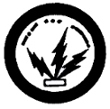

Radio
- Learn the safety precautions necessary in the building, repairing, and testing of radio equipment, and in the erection of transmitting and receiving antennas.
- Do the following:
- Demonstrate correct soldering techniques suitable for the wiring of radio equipment.
- Show how to avoid heat damage to transistors and other small parts during soldering.
- Explain why rosin-core solder is used rather than acid-core solder in the building of equipment.
- Do the following:
- Draw 10 schematic symbols commonly used in diagrams of radio receiver, radio transmitters, or audio-frequency equipment.
- Explain in general terms what each of the parts represented by the schematic symbol does.
- Using the knowledge gained from the first three questions, build from individually purchased parts or from a kit at least one piece of radio equipment using a vacuum tube, transistor, or diode (including selenium, germanium, or silicon rectifiers). Demonstrate the equipment for your Counselor to show that it works correctly, and to show that the wiring is safe, correctly soldered, and reasonably neat. (Acceptable equipment includes a portable radio, shortwave receiver, amateur transmitter, hi-fi amplifier, AC-DC multimeter, vacuum-tube voltmeter, FM tuner, shortwave converter, tube or transistor code-practice set, and similar apparatus. Because they are usually too simple, crystal radios, buzzer-type code sets, and continuity testers would not be considered acceptable).
- Demonstrate your ability to send and receive the Morse Code by ear for at least one (1) minute at the rate of at lease five words (25 letters) per minute without any errors. (Holders of unexpired amateur licenses of any class, issued by the National Telecommunications Commission are exempted from this requirement).
- Do the following:
- Name and explain five of the common "Q" codes/signals, and five common abbreviations used by radio operators.
- Explain how amateur radio operations prepare to handle emergency messages during floods, typhoons, earthquakes, and other similar disasters.
- Investigate job opportunities in radio. Discuss these with your Counselor. Tell what job, if any, would interest you, and what training is advisable in preparing for it.
|